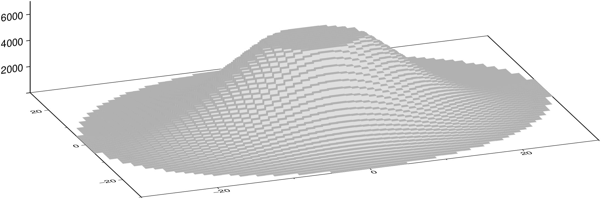
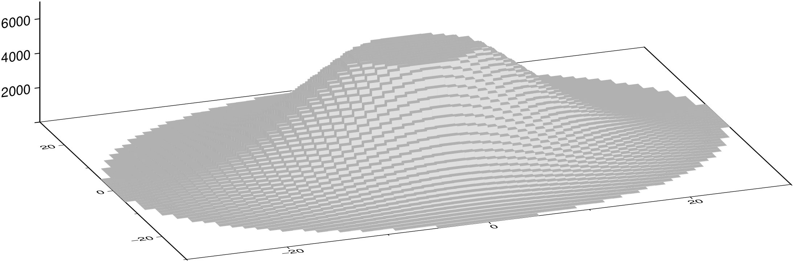
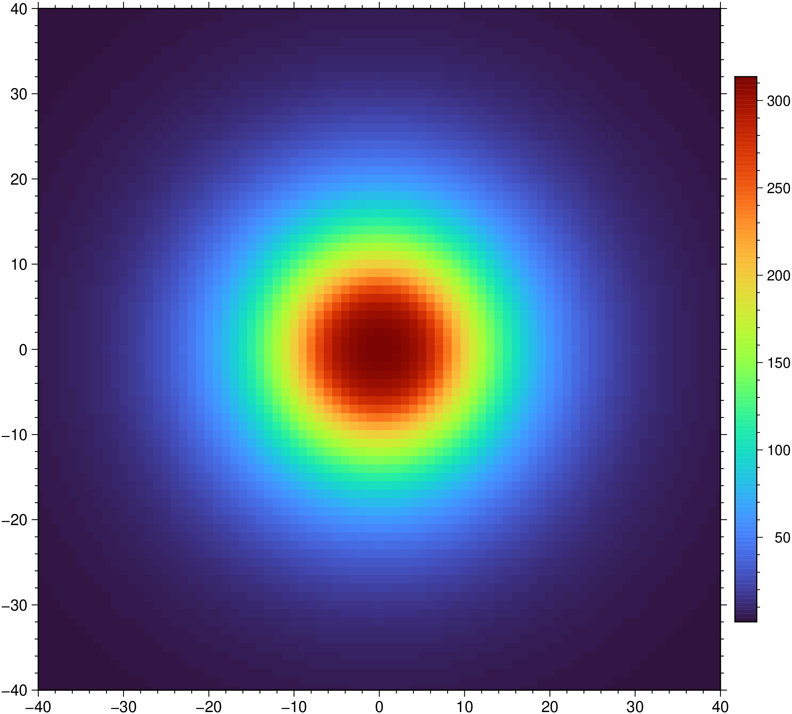
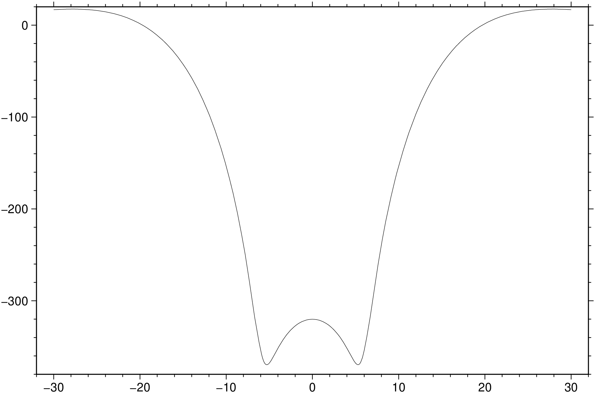
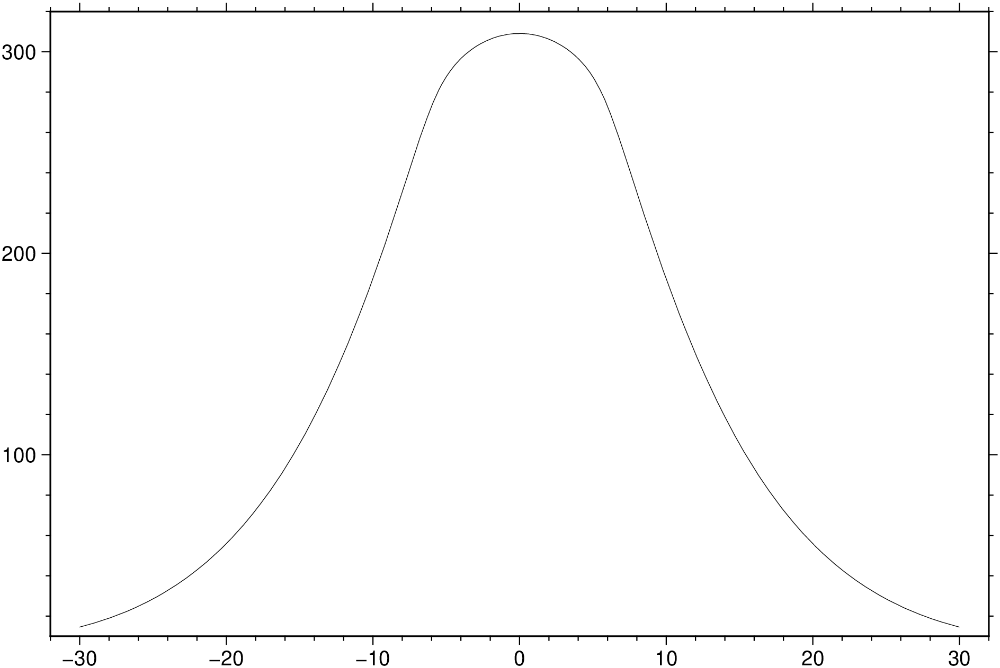

using GMT
plot3d("@prisms.txt", region=(-30, 30, -30, 30, 0, 7000), zsize=3, fill=:gray,
S="o1q+b", lt=:faint, view=(200,20), show=true)
gravprisms(fname::String="", arg1=nothing, kwargs...)Compute the geopotential field over vertically oriented, rectangular prisms. We either read the multi-segment table from file (or standard input), which may contain up to 7 columns: The first four are x y z_low z_high, i.e., the center x, y coordinates and the vertical range of the prism from z_low to z_high, while the next two columns hold the dimensions dx dy of each prism (see xy_sizes if all prisms have the same x- and y-dimensions). Last column may contain individual prism densities (but will be overridden by fixed or variable density contrasts if given via density). Alternatively, we can use prisms to create the prisms needed to approximate the entire feature (topography) or just the volume between two surfaces (one of which may be a constant) that define a layer (set via base and top). If a variable density model (radial_rho) is selected then each vertical prism will be broken into constant-density, stacked sub-prisms using a prescribed vertical increment dz, otherwise single tall prisms are created with constant or spatially variable densities (density). We can compute anomalies on an equidistant grid (by specifying a new grid with region and inc** or provide an observation grid with desired elevations) or at arbitrary output points specified via track. Choose between free-air anomalies, vertical gravity gradient anomalies, or geoid anomalies. Options are available to control axes units and direction.

Three density models modeled by prisms for a truncated Gaussian seamount via C: (left) Constant density (D), (middle) vertically-averaged density varying radially (D), and (right) density varies with r and z (H), requiring a stack of prisms.
fname or arg1 : – fname=file_name | arg1=matrix|D
The file name or a matrix/GMTdatset describing the prisms with record format x y z_lo z_hi [ dx dy ] [ rho ], where the optional items are controlled by options xy_sizes and density, respectively. Density contrasts can be given in \(kg/m^3\) or \(g/cm^3\). Note: If prisms is used then no table will be read.
I or inc or increment or spacing : – inc=x_inc | inc=(x_inc, y_inc) | inc=“xinc[+e|n][/yinc[+e|n]]”
Specify the grid increments or the block sizes. More at spacing
R or region or limits : – limits=(xmin, xmax, ymin, ymax) | limits=(BB=(xmin, xmax, ymin, ymax),) | limits=(LLUR=(xmin, xmax, ymin, ymax),units=“unit”) | …more
Specify the region of interest. More at limits. For perspective view view, optionally add zmin,zmax. This option may be used to indicate the range used for the 3-D axes. You may ask for a larger w/e/s/n region to have more room between the image and the axes.
C or prisms : – prisms=(quit=true, save=file, dz=?)
Create prisms for the entire feature given by topography=height, or just for the layer between the two surfaces specified via base=base and top=top. For layers, either base or top may be a constant rather than a grid. If only height is given then we assume we will approximate the entire feature from base = 0 to height. If radial_rho is used to compute variable density contrasts then we must split each prism into a stack of sub-prisms with individual densities. This is controlled via these modifiers:
- `quit` - Quit execution once that *file* set with `save` has been saved, i.e., no geopotential calculations
will take place.
- `save` - Append *file* to save the prisms to a table.
- `dz` - Append *dz* for the heights of these sub-prisms (the first and last sub-prisms in the stack may have
their heights adjusted to match the limits of the surfaces). Without **radial_rho** we only create a single
uniform-density prism, but those prisms may have spatially varying densities via a grid given in **density**.D or density : – density=fname[+c]|grid
Sets a fixed density contrast that overrides any individual prism settings in the prisms file, in \(kg/m^3\) or \(g/cm^3\). Append +c to instead subtract this density from the individual prism densities. Alternatively, give name of an input grid with spatially varying, vertically-averaged prism densities. This requires prisms and the grid must be co-registered with the grid provided by topography (or base and top). Note: If radial_rho is used then a fixed density may be set via this option provided its modifier +c is set. We will then compute density contrasts in the seamount relative to the fixed density (such as density of seawater for underwater seamounts).
E or xy_sizes or dxdy : – xy_sizes=d | xy_sizes=(dx,dy)
If all prisms in table have constant x/y-dimensions then they can be set here. In that case table must only contain the centers of each prism and the z range (and optionally density; see density). If only dx is given then we set dy = dx. Note: For geographic coordinates the dx dimension is in geographic longitude increment and hence the physical width of the prism will decrease with latitude if dx stays numerically the same.
F or component : – component=(faa=true, geoid=true, vgrad=true)
Specify desired gravitational field component. Choose between faa (free-air anomaly) [Default], geoid (geoid; optionally append average latitude for normal gravity reference value [Default is mid-grid (or mid-profile if track is used)]) or vgrad (vertical gravity gradient).
G or save or outgrid or outfile : – outgrid=[=ID][+ddivisor][+ninvalid][+ooffset|a][+sscale|a][:driver[dataType][+coptions]]
Give the name of the output grid file. Optionally, append =ID for writing a specific file format (See full description). The following modifiers are supported:
Note1: Any offset is added before any scaling. +sa also sets +oa (unless overridden). To write specific formats via GDAL, use =gd and supply driver (and optionally dataType) and/or one or more concatenated GDAL -co options using +c. See the “Writing grids and images” cookbook section for more details.
Note2: This is optional and to be used only when saving the result directly on disk. Otherwise, just use the G = modulename(...) form.
H or radial_rho : – radial_rho=(height=?, lowhigh=(rho_l, rho_h), boost=?, pressure_rho=?, power=?)
Set reference seamount parameters for an ad-hoc variable radial density function with depth. Give the rho_l and rho_h seamount densities as lowhigh=(rho_l, rho_h) in :math:\mbox{kg/m}^3 or :math:\mbox{g/cm}^3 and the fixed reference height in meters. The last three (optional) choices can be used for further changes:
- *boost* - Simulate the higher starting densities in truncated guyots. You can *boost* the seamount
height by this factor [1]. Requires **topography** to know the full height of the seamount.
- *pressure_rho* - Change the water-pressure-driven flank *densify* gradient over the
full reference height [0].
- *power* - Change variable density profile exponent *power* [Default is 1, i.e., a linear change].
See grdseamount for more details.L or base : – base=fname|grid
Give a file name or a GMTgrid of the base surface grid for a layer we wish to approximate with prisms, or give a constant z-level [0].
M or units : – units=(horizontal=true, vertical=true)
Sets distance units used. Use units=:horizontal to indicate that both horizontal distances are in km [m], and units=:vertical to indicate vertical distances are in km [m]. To set both, use the syntax units=(horizontal=true, vertical=true). If selected, we will internally convert any affected distance provided by data input or command line options to meters. Note: Any output will retain the original units.
N or track : – track=trackfile | track=matrix|GMTdatset
Specifies individual (x, y[, z]) locations where we wish to compute the predicted value. When this option is used there are no grids involved and the output data records are returned as a GMTdataset. If level is not set then track must have 3 columns and we take the z value as our observation level; otherwise a constant level must be set via level. Note: If outfile is used to set an output file we will write the output table to that file instead of returning it.
S or topography : – topography=fname|grid
Give name of grid with the full seamount heights, either for making prisms or as required by radial_rho.
T or top : – top=fname|grid
Give name of the top surface grid for a layer we wish to approximate with prisms, or give a constant z-level.
-W or hvar_rho or avedens : – hvar_rho=fname|grid
Give name of an output grid with spatially varying, vertically-averaged prism densities created by prisms and radial_rho.
Z or level or reference_level : – level=0
Set observation level, either as a constant or variable by giving the name of a grid with observation levels. If the latter is used then this grid determines the output grid region as well [0]. Note: the positive z-direction is up.
bo or binary_out : – binary_out=??
Select native binary format for table output. More at
di or nodata_in : – nodata_in=??
Substitute specific values with NaN. More at
e or pattern : – pattern=??
Only accept ASCII data records that contain the specified pattern. More at
f or colinfo : – colinfo=??
Specify the data types of input and/or output columns (time or geographical data). More at
Geographic grids (dimensions of longitude, latitude) will be converted to meters via a “Flat Earth” approximation using the current ellipsoid parameters.
h or header : – header=??
Specify that input and/or output file(s) have n header records. More at
i or incol or incols : – incol=col_num | incol=“opts”
Select input columns and transformations (0 is first column, t is trailing text, append word to read one word only). More at incol
o or outcol : – outcol=??
Select specific data columns for primary output, in arbitrary order. More at
r or reg or registration : – reg=:p | reg=:g
Select gridline or pixel node registration. Used only when output is a grid. More at
yx : – yx=true
Swap 1st and 2nd column on input and/or output. More at
Units
For map distance unit, append unit d for arc degree, m for arc minute, and s for arc second, or e for meter [Default unless stated otherwise], f for foot, k for km, M for statute mile, n for nautical mile, and u for US survey foot. By default we compute such distances using a spherical approximation with great circles (-jg) using the authalic radius (see PROJ_MEAN_RADIUS). You can use -jf to perform “Flat Earth” calculations (quicker but less accurate) or -je to perform exact geodesic calculations (slower but more accurate; see PROJ_GEODESIC for method used).
We have prepared a set of 2828 prisms that represent a truncated Gaussian seamount of height 6000 m, radius 30 km, with the base at z = 0 m, available in the remote file @prisms.txt. A quick view of the 3-D model can be had via:
using GMT
plot3d("@prisms.txt", region=(-30, 30, -30, 30, 0, 7000), zsize=3, fill=:gray,
S="o1q+b", lt=:faint, view=(200,20), show=true)
To compute the free-air anomalies on a grid over the set of prisms given in _@prisms.txt_, using 1700 \(kg/m^3\) as a fixed density contrast, with horizontal distances in km and vertical distances in meters, observed at 7000 m, try:
using GMT
G = gravprisms("@prisms.txt", region=(-40,40,-40,40), inc=1, units=:horizontal,
density=1700, component=:faa, level=7000);
viz(G, colorbar=true)
To obtain the vertical gravity gradient anomaly along the track given in crossing.txt for the same model, try:
using GMT
Dcross = gmt("math -T-30/30/0.1 T 0 MUL =");
Dvgg = gravprisms("@prisms.txt", track=Dcross, density=1700, units=:horizontal, component=:vgrad, level=7000);
viz(Dvgg, i="0,3")
Finally, redo the gravity calculation but now use the individual prism densities in the prism file and restrict calculations to the same crossing profile, i.e.:
using GMT
Dcross = gmt("math -T-30/30/0.1 T 0 MUL =");
Dfaa = gravprisms("@prisms.txt", track=Dcross, units=:horizontal, component=:faa, level=7000);
viz(Dfaa, i="0,3")
To build prisms using a variable density grid for an interface crossing the zero level and obtain prisms with the negative of the given density contrast if below zero and the positive density contrast if above zero, try:
gravprisms(top="Flexure_surf.grd", prisms=(quit=true, save="prisms_var.txt"), density="Variable_drho.grd")We operate in a right-handed coordinate system where the positive z-axis is directed upwards. In this scenario, topographic surfaces may be above or below a reference surface (typically the observation level) but the positive direction is always up. Positive geopotential anomalies are thus aligned with the positive source (topographic relief) direction. If your input data are positive down (e.g., depths) then you will need to change the sign.
When creating prisms from grids via prisms, a special case arises when a single surface (set via base or top) straddles zero. This may happen if the surface reflects flexure beneath a load, which has in a negative moat flanked by positive bulges. When such a interface grid is detected we build prisms going from z to zero for negative z and from 0 to z for positive z. As we flip below zero we also change the sign of the given density contrast. You can override this behavior by specifying the opposite layer surface either by a constant or another grid. E.g., if base specifies the base surface you can eliminate prisms exceeding zero via top=0, and by interchanging the base and top arguments you can eliminate prisms below zero. Note: When two surfaces are implied we keep the given density contrast as given.
The analytical expression for the geoid over a vertical prism (Nagy et al., 2000) is fairly involved and contains 48 terms. Due to various cancellations the end result is more unstable than the simpler expressions for gravity and VGG. Be aware that the result may have less significant digits that you may expect.
Grant, F. S. and West, G. F., 1965, Interpretation Theory in Applied Geophysics, 583 pp., McGraw-Hill.
Kim, S.-S., and P. Wessel, 2016, New analytic solutions for modeling vertical gravity gradient anomalies, Geochem. Geophys. Geosyst., 17, https://doi.org/10.1002/2016GC006263 <https://doi.org/10.1002/2016GC006263>_.
Nagy D., Papp G., Benedek J., 2000, The gravitational potential and its derivatives for the prism, J. Geod., 74, 552–560, https://doi.org/10.1007/s001900000116 <https://doi.org/10.1007/s001900000116>_.
This function has multiple methods:
gravprisms(cmd0::String; ...) - gravprisms.jl:58gravprisms(; ...) - gravprisms.jl:58gravprisms(cmd0::String, arg1::GDtype; kwargs...) - gravprisms.jl:58[gravmag3d], grdgravmag3d, grdseamount, talwani2d, talwani3d